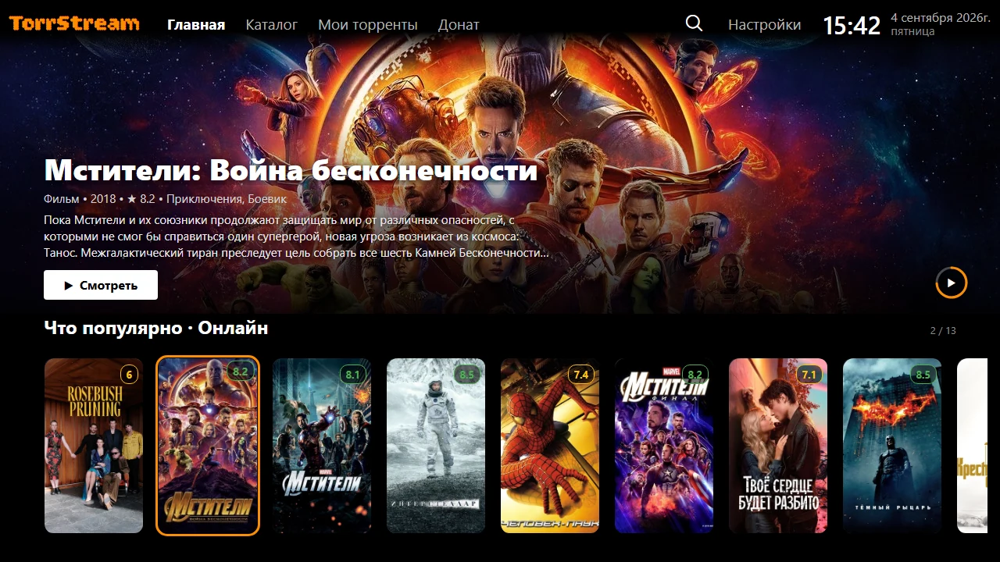
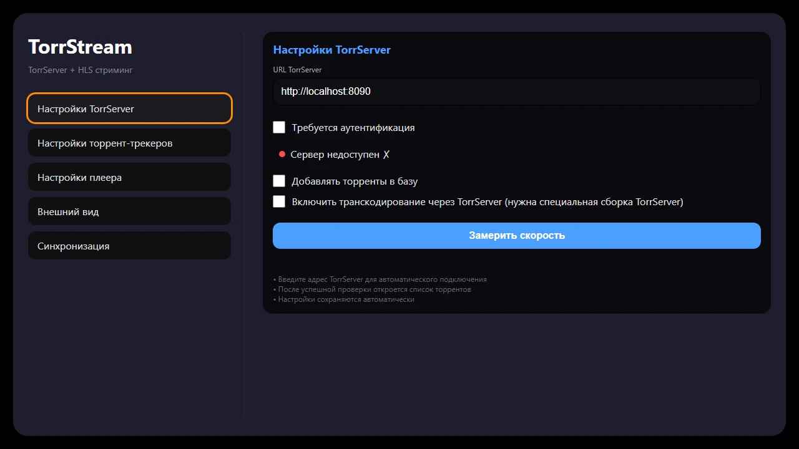
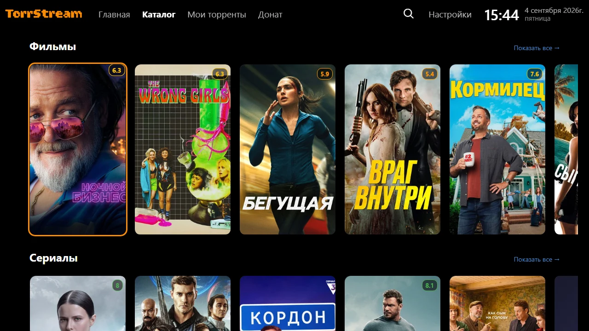
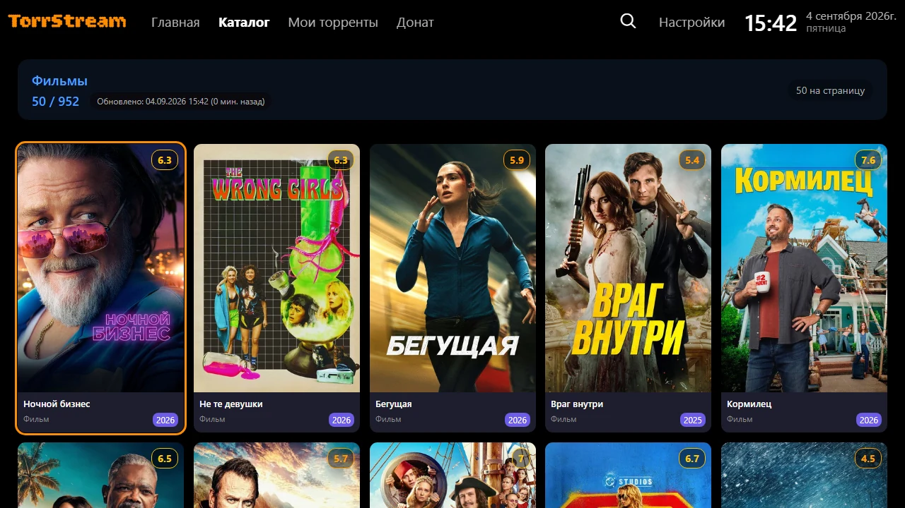
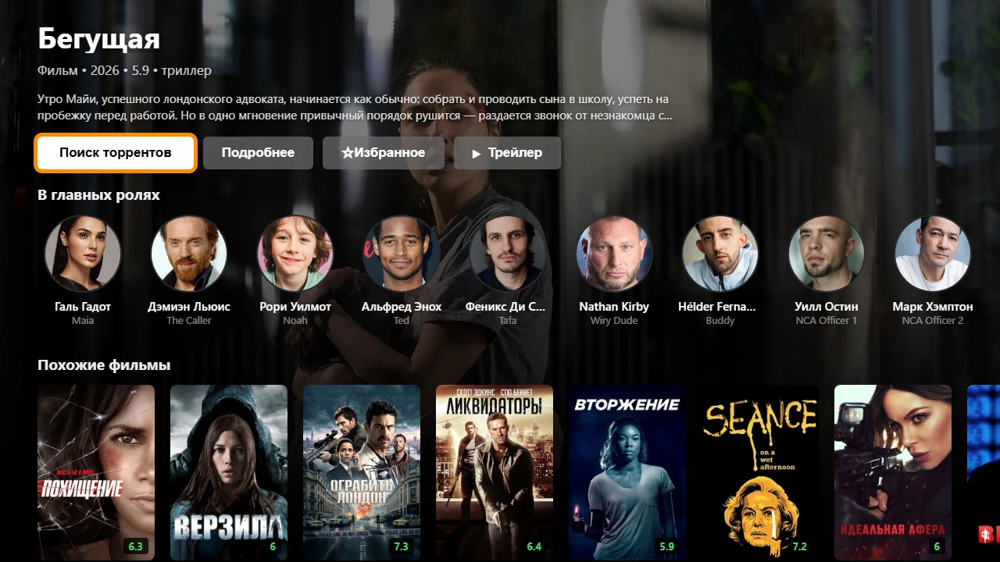
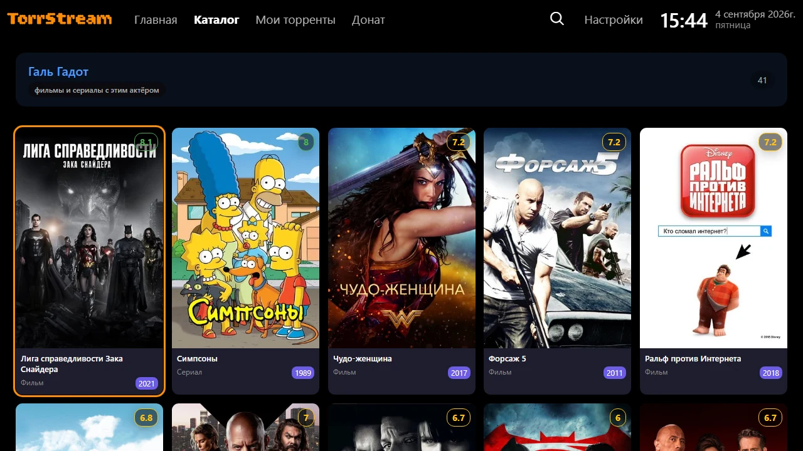
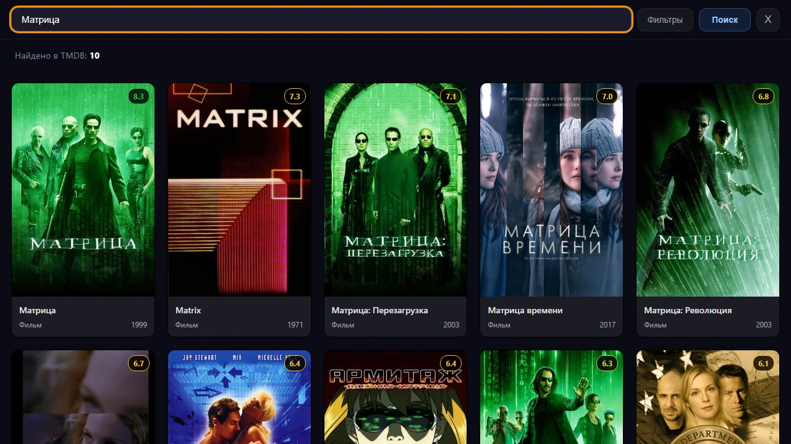
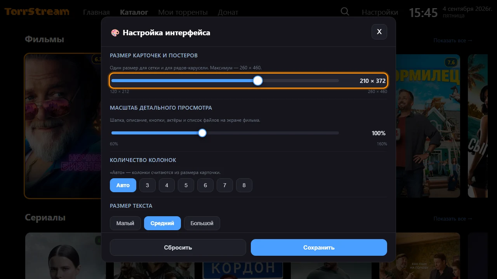

TorrStream превращает ваш TorrServer в удобный медиацентр: каталог с постерами, поиск раздач, плеер с таймкодами и синхронизация между устройствами. Телевизор, телефон, планшет, ПК — интерфейс один и тот же.

Всё работает поверх вашего TorrServer — файлы никуда не скачиваются целиком, воспроизведение начинается сразу.
Крупный баннер с фоновым трейлером и ряды подборок: популярное, новинки, сейчас в эфире, топ.
Ряды-карусели по категориям и полная сетка по кнопке «Показать все». Обновляется автоматически.
Описание, рейтинг, актёры, похожие фильмы, трейлеры и поиск раздач — всё на одном экране.
Нажмите на актёра в карточке — откроется всё, где он снимался. «Назад» вернёт ровно туда, откуда ушли.
Глобальный — по базе фильмов с постерами. По торрентам — сразу раздачи, с фильтрами по качеству, трекеру и озвучке.
Позиция просмотра сохраняется для каждой серии и каждого устройства. Вернулись — продолжили с того же места.
Начали смотреть на телевизоре — досмотрели на телефоне. Клиенты связываются кодом в настройках.
Выбор аудиодорожки и субтитров прямо в плеере. Выбранная озвучка запоминается для этого фильма.
Автопереход к следующей серии и кнопка пропуска заставки и титров.
Отмечайте звёздочкой — появится отдельный ряд. История просмотра собирается сама.
Размер карточек, число колонок, цвет фокуса, плотность, плавность прокрутки — под свой экран.
Один интерфейс для телевизора, телефона и ПК: навигация стрелками, клики и касания работают одинаково.
Нужны две вещи: TorrServer (раздаёт торренты) и TorrStream (то, что вы видите на экране). Программа TorrStream запускается на компьютере или роутере в вашей сети, а телевизор открывает её по адресу.
Скриншоты кликабельны — нажмите, чтобы рассмотреть.
Откройте Настройки в шапке и на вкладке «Настройки TorrServer» укажите адрес с протоколом — например http://192.168.1.10:8090. Кружок рядом покажет состояние: зелёный — сервер отвечает, красный — недоступен.
Здесь же включается авторизация, добавление торрентов в базу и транскодирование, а кнопка «Замерить скорость» проверит канал до сервера.

Наверху — крупный баннер с трейлером, ниже ряды подборок. Стрелками вверх/вниз переключаются ряды, влево/вправо — карточки внутри ряда.
Вкладка Каталог показывает категории рядами. Кнопка «Показать все» в конце ряда (или нажатие на заголовок) открывает категорию полной сеткой с догрузкой по мере прокрутки.


Описание, рейтинг, год и жанры, а под ними — кнопки действий:
Ниже — ряд «В главных ролях» и «Похожие фильмы». Нажатие на актёра открывает его фильмографию.

Нажмите на любого актёра — откроется всё, где он снимался. Из фильмографии можно зайти в фильм, оттуда к другому актёру и так далее; кнопка «Назад» каждый раз возвращает ровно на шаг назад по этому пути.

Глобальный поиск ищет фильм или сериал по названию и показывает карточки с постерами — дальше открываете карточку и подбираете раздачу.
Поиск торрентов сразу выдаёт раздачи по запросу. Кнопка «Фильтры» открывает отбор по качеству, трекеру, году, сезону и озвучке; с пульта к фильтрам быстро попасть нажатием влево.

Настройки → Внешний вид. Здесь настраиваются размер карточек и постеров, масштаб карточки фильма, число колонок в сетке, размер текста, плотность, цвет фокуса, плавность прокрутки и трейлеры на главной.

Вкладка Мои торренты — всё, что сейчас лежит на вашем TorrServer: постер, размер, прогресс загрузки. Открытие торрента показывает список файлов и серий. Чтобы удалить раздачу — задержите ОК на карточке примерно на секунду.
Приложение рассчитано на пульт, но мышь и касания работают везде одинаково.
TorrStream делается силами энтузиастов. Вкладка Донат в приложении — способ сказать спасибо и помочь с серверами и новыми функциями.
❤️ Любая помощь имеет значение. Спасибо!